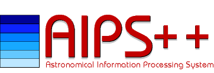

| Getting Started | Documentation | Glish | Learn More | Programming | Contact Us |
|  | VERSIONID |
News
|
Prebuilt binaries for Solaris and Linux are available via the aupdate script. To determine your current version, type "avers" at a UNIX command prompt. To get the updated snapshot type "aupdate" at a UNIX command prompt. Please note aupdate retrieves the updated stable binaries and docs over the net using cvsup. The process can take "awhile". Additionally, RPM's are available for a variety of Linux distributions and may be found at ftp::/ftp.cv.nrao.edu/aips++/rpms. Please note there is currently limited support for users outside the ALMA community.
For AIPS++ versions less than v1.8 Build 391 you will need to obtain aupdate via anonymous ftp. For Linux users please get ftp://aips2.nrao.edu/pub/import/Linux/aupdate.tar.gz, for Solaris user get it from ftp://aips2.nrao.edu/pub/import/Solaris/aupdate.tar.gz. Unpack the tar file in your $AIPSARCH directory (the same directory that contains your AIPS++ bin directory).
AIPS++ does not currently support any version of Windows or any Apple computers.
| Identifier | Project | State | Software | Problem severity | Headline | Resolved_on |
|---|---|---|---|---|---|---|
| AOCso04902 | problems | R | AIPS++ | 2 | msplot won't plot amp vs channel in weekly build | 27 September, 2004 |
| AOCso04816 | problems | R | AIPS++ | 2 | simulator prediction problem with componentlists and voltage patterns | 20 October, 2004 |
| AOCso04951 | problems | R | AIPS++ | 2 | vlafill polarized model data column not initialized properly | 27 October, 2004 |
| AOCso04943 | problems | R | AIPS++ | 2 | imgr.setimage nchan, start, step selection not working correctly | 27 October, 2004 |
| AOCso02172 | problems | R | AIPS++ | 2 | history | 07 October, 2004 |
| AOCso04939 | problems | R | AIPS++ | 2 | Im.Analysis GUI: Regions 'Start' button doesn't work | 20 September, 2004 |
| AOCso04938 | problems | R | AIPS++ | 2 | Im.Analysis GUI: Regions 'Show' button doesn't work | 20 September, 2004 |
| AOCso04936 | problems | R | AIPS++ | 2 | Im.analysis GUI causes glish errors when clicking on Plot or Auto-plot | 20 September, 2004 |
| AOCso04843 | problems | R | AIPS++ | 2 | failed selection | 27 October, 2004 |
| AOCso04919 | problems | R | AIPS++ | 2 | imgr.clean needs > 4 GB memory to create 0.2 GB image cube | 27 October, 2004 |
| AOCso04903 | problems | R | AIPS++ | 2 | msplot behavior totally messed up | 18 October, 2004 |
| AOCso04797 | problems | R | AIPS++ | 2 | doesn't exist and doesn;t work | 20 October, 2004 |
| AOCso04890 | problems | R | AIPS++ | 2 | plotcal can't read PBcal table | 27 September, 2004 |
| AOCso04958 | problems | R | AIPS++ | 3 | bombs when no channels in spwid | 27 October, 2004 |
| AOCso04896 | problems | R | AIPS++ | 3 | Can't handle more than one field name matches | 27 September, 2004 |
| AOCso04926 | problems | R | AIPS++ | 3 | dc.summary ch1 freq different than what mirfiller reports | 04 October, 2004 |
| AOCso04924 | problems | R | AIPS++ | 3 | Having problems making fits tapes | 29 October, 2004 |
| AOCso04957 | problems | R | AIPS++ | 3 | cal.setdata async parm doesn't work | 22 October, 2004 |
| AOCso04799 | problems | R | AIPS++ | 3 | simulator segvs if disk space is exhausted | 20 October, 2004 |
| AOCso04761 | problems | R | AIPS++ | 3 | imgr.clean - mfs imaging should be added to g192 benchmark | 07 October, 2004 |
| AOCso04468 | problems | R | AIPS++ | 3 | tofits produces cubes with degenerate axes | 01 November, 2004 |
| AOCso04861 | questions | R | AIPS++ | 4 | Where is sp window 15 and 16 | 27 September, 2004 |
| AOCso04376 | enhancements | R | AIPS++ | 4 | imagr.weight will not weight mosaics correctly | 15 October, 2004 |
| AOCso04941 | problems | R | AIPS++ | 4 | At end of tool, it defines field globally | 20 September, 2004 |
| 24 records found | ||||||